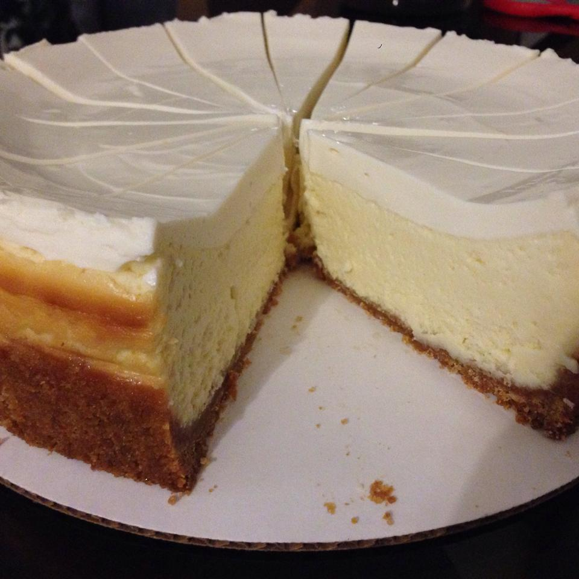

New York Cheesecake

(Original)
Description
This cheesecake is New York-style, fool-proof, easy, and super-delicious.
Ingredients
- 1.5 cups graham cracker crumbs
- 0.25 cups white sugar
- 0.33 cups butter, melted
- 3 (8 oz) packages cream cheese, room temperature
- 4 eggs, room temperature
- 1 tbsp vanilla extract
- 1 cup white sugar
- 1 tsp cream of tartar
- 1 pint sour cream
- 1 tsp vanilla extract
- 1.5 cups white sugar
Steps
- Preheat oven to 350 degrees F (175 degrees C).
- Mix together the cracker crumbs, sugar, and butter in a bowl until evenly moistened. Press into the bottom and 1/2 inch up the sides of a 9-inch springform pan.
- In a large bowl, mix together the cream cheese and sugar with an electric mixer until smooth. Blend in the eggs, 1 tablespoon of vanilla, and cream of tartar. Pour over the pie crust.
- Bake in preheated oven until the center is set, about 50 minutes. Allow to cool on counter for 5 minutes.
- Mix together the sour cream, 1 teaspoon of vanilla, and 1/2 cup sugar in a bowl until smooth; carefully pour over cheesecake starting from the sides of the pan and working your way to the center.
- Return to oven for another 5 minutes. Allow to cool in pan to room temperature. Refrigerate for at least 6 hours before serving.
(Back)